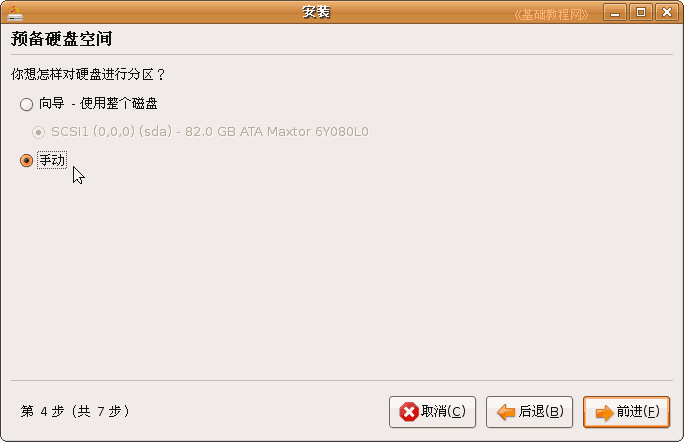

Ubuntu安装基础教程
作者：Teliute 来源：基础教程网
七、安装系统 返回目录 下一课进入到live CD以后，我们既可以先试试各项操作，也可以继续安装Ubuntu系统，下面我们来看一个练 习；
1、安装系统
在桌面左上角找到“安装”图标，双击打开它，这儿要耐心稍等一会，也可以点击系统菜单“System－系统管理－安装；
1）首先第一步出来的是欢迎面板，检查一下左边栏应该选中了“中文(简体)”，点“前进”按钮继续；
2）第二步是询问所在的城市，这儿默认选择的是上海(shanghai)，时间可以安装好了再调整，直接点“前进”继续；
3）接下来第三步是询问键盘布局，检查一下左边是USA，直接点“前进”按钮即可；
前面这三步都可以选默认的直接前进，第四步分区开始要细致耐心；
2、分区操作
1）在第四步出来的分区面板里，选择下边的“手动”分区；

2）点“前进”按钮，出来一个磁盘扫描滚动条，然后显示整个硬盘的分区情况，
里面的/dev/sda就是硬盘，后面的数字代表各个分区，注意最后有一个free space是我们前面预留的空闲分区空间；
3）选中“free space”，点下面的 New partition 新建分区按钮，出来一个创建分区面板，
从上到下顺序，分区类型默认即可，分区容量至少在4G以上，“用于”那儿点一下选Ext3，“挂载点”那儿点一下选 / ；
检查一下没什么错误，点绿色“OK”按钮确定，这个分区用于安装系统文件；
4）然后出来磁盘扫描，过一会回到分区面板，再次选中“free space”、点“New partition”进入分区面板，
这次的容量输入 128 ，“用于”选 Ext3 ，“挂载点”选/boot，这个分区用于存放系统的引导文件；
5）点“OK”确定按钮，出来磁盘扫描，然后回到分区面板，再次选中“free space”、点“New partition”进入分区面板，
这次的容量根据内存大小，至少要跟内存大小相同或多一些，“用于”选 交换空间 ，“挂载点”省略，这个分区是用来休眠和虚拟内存用的；
6）点“OK”确定按钮，回到分区面板后，再次选中“free space”，点“New partition”创建分区，
剩下的空间可以都划分给/home，“用于”选 Ext2 ，“挂载点” 选 /home，这个分区是用来存放用户文件，像文档、图片、歌曲等等，容量别太小；
点“OK”确定按钮，回到分区面板，分区操作完成，回到分区面板检查一下，然后点“前进”按钮继续；
3、用户信息
1）经过分区操作以后，第五步是用户身份，第一行输入名称，用户名那儿要输入英文小写字母，
密码输入两遍相同的，找个本子记一下，后面要经常用到，计算机名称也可以修改一下；
2）点“前进”到第6步“迁移向导”，直接点“前进”继续下一步，这儿是导入WinXP系统的文件，先不导入；
3）点“前进”到第7步准备安装，这儿要细心检查一下，确保没有错误，
右边有一个“高级”按钮，可以把系统引导程序安装到其他分区，如果系统中安装了特殊程序(如还原精灵)，可以把引导程序安装到/boot所在的磁盘分区(但需要手动添加才能启动)；
检查好以后，点“安装”按钮，开始安装系统，这时候耐心等待即可，
4）安装完成后出来一个对话框，提示继续使用live CD，还是重启动计算机，点“现在重启”重启动即可；
以后重启，注意关机按钮在右上角，一个红色的按钮，点击出来关机面板，再选择两个圆箭头的重启动按钮；
本节学习了安装Ubuntu系统的基本方法，如果你成功地完成了练习，请继续学习下一课内容；
本教程由86团学校TeliuTe制作|著作权所有
基础教程网：http://teliute.org/
美丽的校园……
转载和引用本站内容，请保留作者和本站链接。